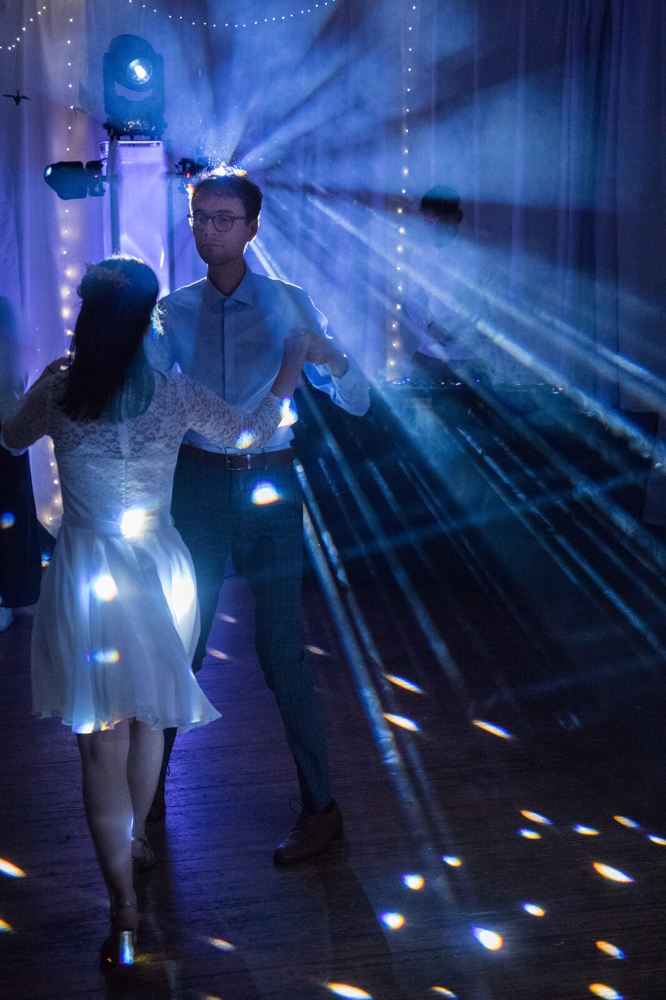
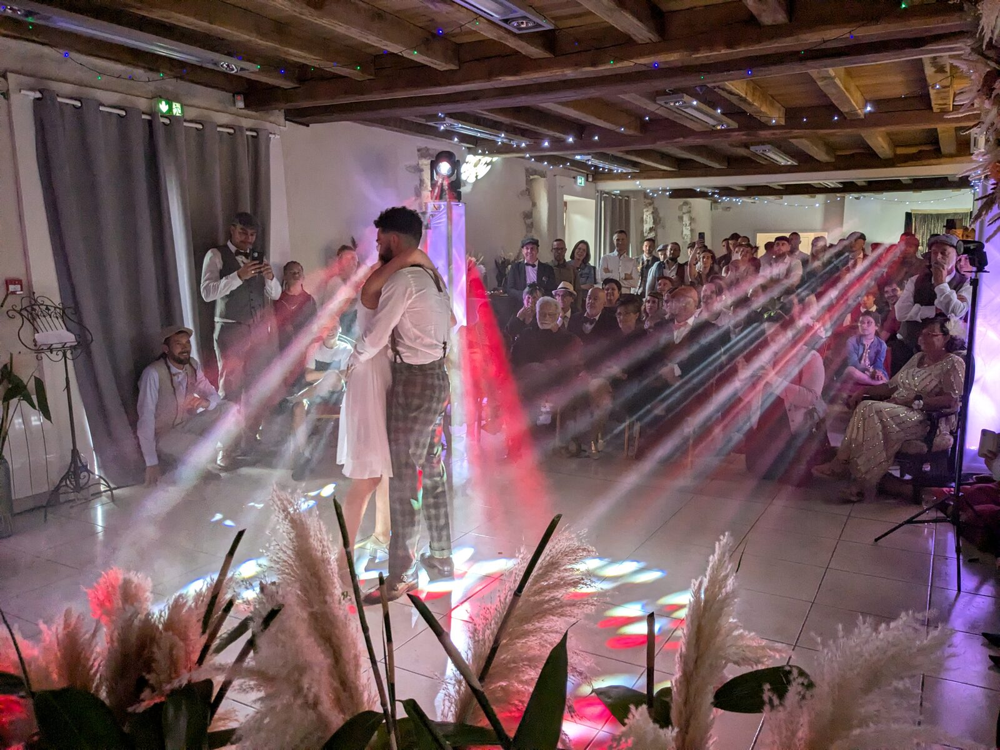

Mariages & célébrations
Du vin d'honneur au dancefloor, une bande son unique pensée pour chaque moment de votre journée.
Chaque instant mérite sa musique
Votre événement mérite une mise en scène qui lui confère toute son intensité. KoKa Group orchestre chaque détail : une ambiance sonore ciselée, un éclairage sculptant l'atmosphère, des effets subtils qui transforment l'instant en une parenthèse hors du temps. Nous concevons des moments à votre image, où chaque note et chaque lumière racontent une histoire : la vôtre.

Cérémonie & cocktail
Musique d'ambiance élégante pour la cérémonie laïque et le vin d'honneur. Nous créons une atmosphère douce et raffinée qui accompagne chaque moment avec justesse.
Soirée dansante
Du premier slow à la dernière danse, nous montons l'énergie progressivement pour que le dancefloor ne désemplisse pas. Playlist validée avec vous, adaptée en temps réel.
EVG / EVJF
Une dernière fête avant le grand saut ? Nous préparons une soirée taillée sur mesure, avec une musique qui colle à votre vibe et des effets lumineux qui donnent le ton.
Une prestation clé en main
- Rendez-vous préparatoire pour définir vos envies musicales
- Playlist sur-mesure validée ensemble
- Installation et calibrage du matériel en amont
- DJ set en continu du cocktail à la fermeture
- Éclairage d'ambiance adapté à votre lieu
- Coordination avec votre traiteur et wedding planner

Camille a fait preuve d'un grand professionnalisme et d'une capacité d'adaptation remarquable. Il s'est avéré exceptionnel derrière les platines.Clotilde — Mariée, septembre 2025
Votre mariage en 5 étapes
Rendez-vous découverte
Un échange pour comprendre votre histoire, vos goûts musicaux et l'atmosphère souhaitée. Gratuit et sans engagement.
Conception playlist
Sélection musicale adaptée à chaque moment. Vous validez et ajoutez vos titres incontournables.
Repérage du lieu
Visite de votre lieu de réception, analyse acoustique et positionnement du matériel.
Installation jour J
Arrivée en avance, calibrage complet. Son, lumières, effets intégrés à votre décoration.
Animation en continu
Du cocktail à la dernière danse, une animation adaptée en temps réel. Vous profitez, nous gérons.
Tout savoir sur nos prestations mariage
Quels styles musicaux proposez-vous pour un mariage ?
Aucune limite de style. Variété, house, funk, disco, hip-hop, musique latine… Nous adaptons notre sélection à vos goûts lors du rendez-vous préparatoire.
Pouvez-vous assurer le vin d'honneur ET la soirée dansante ?
Absolument. Nos formules couvrent l'intégralité de la journée : cérémonie, cocktail, dîner et soirée dansante. C'est d'ailleurs notre recommandation pour une harmonie parfaite du début à la fin.
Quel matériel utilisez-vous ?
Matériel professionnel haut de gamme : sonorisation adaptée à votre lieu, platines dernière génération, éclairages LED, lyres, machines à fumée. Tout est entretenu et calibré pour un rendu irréprochable.
Dans quelles régions intervenez-vous ?
Basés à Nantes et Poitiers, nous intervenons partout en France et à l'international sur demande. Les frais de déplacement sont intégrés de manière transparente dans nos devis.
Comment réserver votre prestation ?
Contactez-nous via le formulaire, par téléphone ou WhatsApp. Rendez-vous découverte gratuit, puis devis personnalisé. Un acompte confirme la réservation. Nous recommandons 6 à 12 mois d'avance.
Proposez-vous un éclairage personnalisé ?
Oui, l'éclairage fait partie intégrante de notre prestation : uplights aux couleurs de votre déco, éclairage piste de danse, gobos personnalisés avec vos initiales. La lumière est un élément clé de notre approche.
Découvrez nos autres prestations
Un projet en tête ?
Chaque événement est unique. Contactez-nous pour discuter de vos envies.
Nous contacter